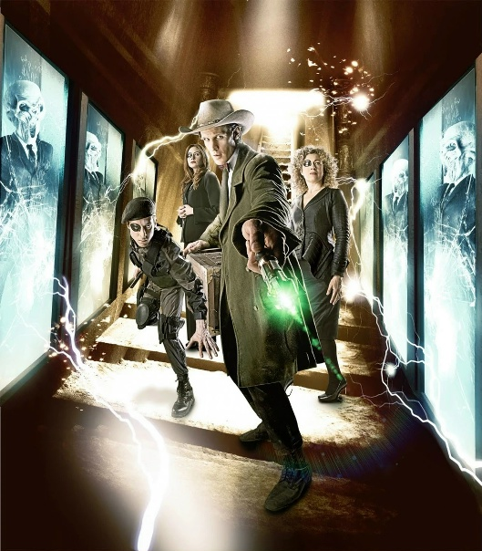

Эра Одиннадцатого Доктора (6 сезон)
<<< НАЗАД ||| 13. Свадьба Ривер Сонг ||| ДАЛЬШЕ >>>
или
ДАЛЬШЕ >>> к мини-эпизодам
ДАЛЬШЕ >>> к спин-офф сериалу "Торчвуд"

+ Original [ENG]
Субтитры: Русские {TrueTransLate} + Английские
| Весь 6-й сезон (13 серий) |
The Wedding of River Song
Дата выхода: 1 октября 2011
Формат: 45-минутный эпизод
| Варианты озвучек: | * Разные: смотрите по инструкции |
|---|---|
| Скачивание и просмотр: |
Что-то случилось со временем: все события человеческой истории происходят одновременно, образуя причудливую картину, в которой соседствуют динозавры и древние римляне, мамонты и небоскрёбы, Уинстон Черчилль и Чарльз Диккенс. Только Доктор может спасти время как таковое, но, увы, это может стоить ему жизни. Ведь причина творящегося хаоса — женщина…


Трейлер: